Συντεταγμένες, τοπογραφικό και ΔΓΜ — βήμα βήμα
Κάθε ενότητα έχει τι κάνεις, με τη σειρά, δίπλα σε σύντομο βίντεο ή εικόνα. Τα βίντεο παίζουν σε επανάληψη· πάτα πάνω τους για παύση. Ξεκίνα από το «Τι θέλεις να κάνεις;».
0Τι θέλεις να κάνεις;
Από PDF ή DXF τοπογραφικού / διαγράμματος κάλυψης σε Excel, TXT, DXF. Δεν σχεδιάζεις τίποτα.
Basic ΣΤΟΧΟΣ 2ΤοπογραφικόΑπό το DXF σου σε πλήρες τοπογραφικό με πίνακες, δηλώσεις, πινακίδα, PDF και DXF για ΚΗΔ.
Pro ΣΤΟΧΟΣ 3ΔΓΜΔιάγραμμα Γεωμετρικών Μεταβολών: διόρθωση ορίων, κατάτμηση, συνένωση, κάθετες.
Pro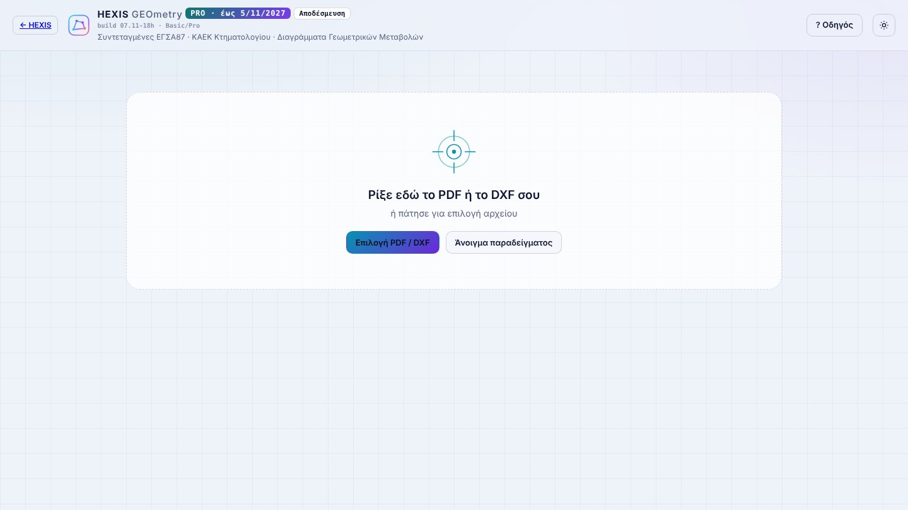
Συντεταγμένες
Για να πάρεις τις συντεταγμένες ενός σχεδίου που ήδη υπάρχει.
1Από PDF σε συντεταγμένες
Από πού βγαίνουν: από τους πίνακες συντεταγμένων που είναι γραμμένοι στο σχέδιο, με τα ίδια ψηφία και δεκαδικά. Σε DXF χωρίς πίνακες, από τα κλειστά πολύγωνα σε ΕΓΣΑ 87.
- Πάτα Επιλογή PDF / DXF ή σύρε το αρχείο στην αρχική σελίδα.
- Καρτέλα 1 Πίνακες: κάθε πίνακας έχει τρεις ελέγχους — εμβαδό, πλευρές, κορυφές. Πράσινο ✓ = σωστός.
- Αν μια τιμή είναι κόκκινη, πάτα στο κελί και γράψε την όπως είναι στο χαρτί.
- Πάνω: Excel CSV TXT DXF και Αναφορά PDF με τους ελέγχους.
Σκαναρισμένο χαρτί ή φωτογραφία: αν δεν βρεθεί πίνακας, πάτα «Επιλογή περιοχής» και πιάσε τον πίνακα με το πλαίσιο.
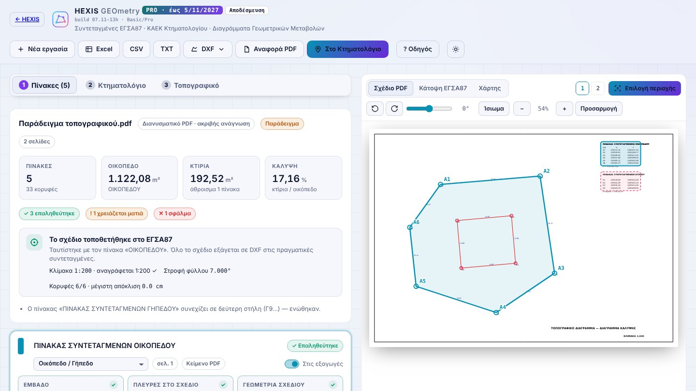
Τοπογραφικό
Από το DXF της αποτύπωσης σε πλήρες τοπογραφικό. Στο Pro.
2Τι σχεδιάζω στο DXF πριν το ανεβάσω
Από το HEXIS PAD: το αρχείο «…_GEOmetry.dxf» είναι ήδη σωστό. Το ανεβάζεις και το τοπογραφικό ξεκινά μόνο του.
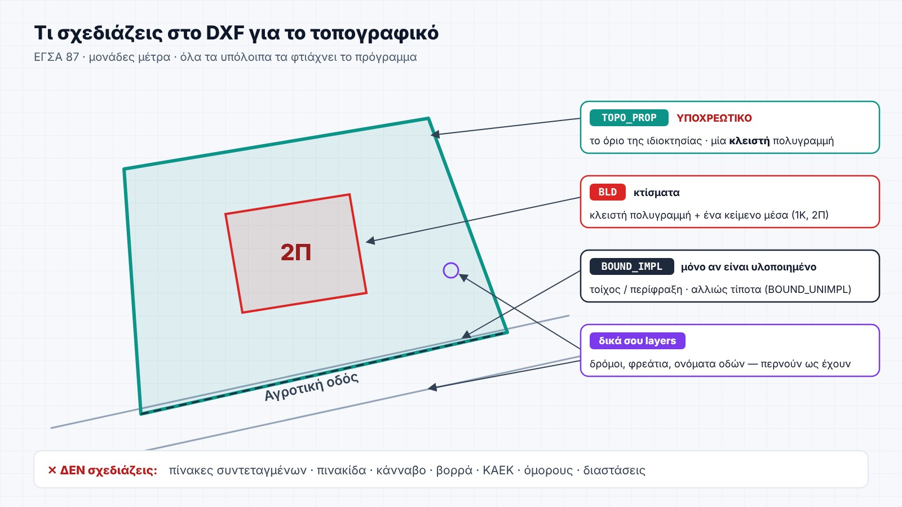
3Τα 8 βήματα
- Ανέβασε το DXF. Καρτέλα 3 Τοπογραφικό → Τοπογραφικό διάγραμμα. Βρίσκει μόνο του ΚΑΕΚ, όρους δόμησης, όμορους, αιγιαλό, δασικά.
- Τα στοιχεία μπαίνουν σε 8 αριθμημένα βήματα. Κάτω γράφει «Βήμα 2 από 8» με ← Βήμα 1 και Επόμενο →.
- 1 Σύνοψη · 2 Ιδιοκτήτης & θέση · 3 Όμοροι · 4 Δηλώσεις & μηχανικός · 5 Κατάτμηση / Συνένωση · 6 Φωτογραφίες & χάρτες · 7 Πινακίδα · 8 Εκτύπωση.
- Τα περισσότερα είναι ήδη συμπληρωμένα από το Κτηματολόγιο και τους όρους δόμησης — έλεγξε και συμπλήρωσε ό,τι λείπει.
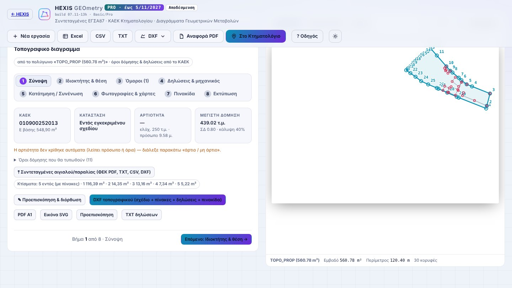
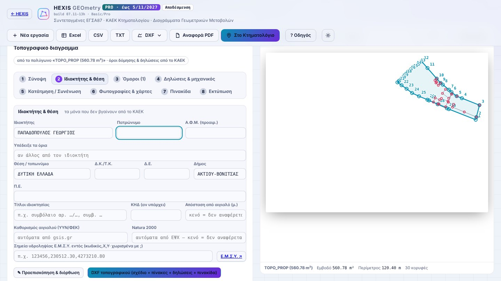
4Στοιχεία, φωτογραφίες, πινακίδα
- Φωτογραφίες & χάρτες: ανέβασε φωτογραφίες του ακινήτου· μπαίνουν μεγάλες, δύο σε κάθε σειρά.
- Πινακίδα: χρησιμοποιείται η πινακίδα του HEXIS ή η δική σου σε DXF, πάντα σε μέγεθος σελίδας Α4.
- Τα κελιά «Εργοδότης», «Έργο», «Θέση», «Θέμα Σχεδίου», «Ημερομηνία», «Κλίμακα», «Αριθμός Σχεδίου» συμπληρώνονται μόνα τους. Στο βήμα 2 γράφεις και Έργο και Διεύθυνση (οδός & αριθμός). Στη «Θέση» μπαίνουν η διεύθυνση, η θέση, η Τοπική Κοινότητα, η Δημοτική Ενότητα, ο Δήμος και από κάτω ο ΚΑΕΚ.
- Την πινακίδα και το λογότυπο τα ανεβάζεις μία φορά: μένουν στον λογαριασμό σου και είναι μόνο δικά σου.
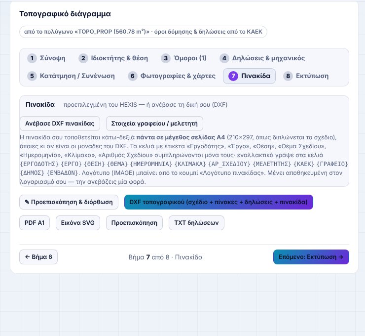
5Συμβατότητα με το Κτηματολόγιο
- Στο βήμα 4 Δηλώσεις & μηχανικός διάλεξε αστική (Uo 0,50 m) ή αγροτική (Uo 2,00 m). Προτείνεται αυτόματα από τη «Θέση».
- Βλέπεις αμέσως: ΣΥΜΒΑΤΟ, οριακά ή απαιτείται ΔΓΜ, με εμβαδά, ανοχή και απόκλιση ορίων.
- Η Δήλωση συμβατότητας του συντάκτη μπαίνει μόνη της στο σχέδιο, στο PDF και στο TXT. Με «χωρίς δήλωση συμβατότητας» βγαίνει εκτός.
Αν βγει «απαιτείται ΔΓΜ», συνέχισε στην ενότητα 9 με το ίδιο αρχείο.
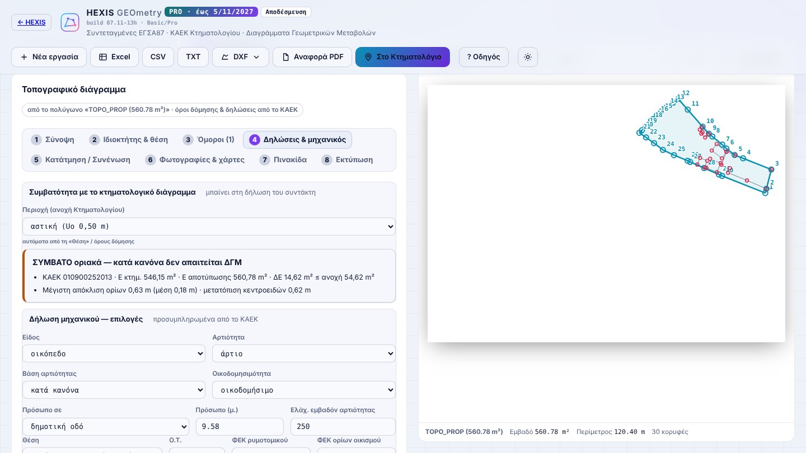
6Σχεδιαστικός έλεγχος
- Βήμα 8 → ✎ Προεπισκόπηση & διόρθωση: βλέπεις το φύλλο όπως θα τυπωθεί.
- Μετακίνηση: σύρε ένα κείμενο ή έναν πίνακα. A+ / A− για μέγεθος.
- Στροφή: σύρε τη μωβ λαβή πάνω από το κείμενο, γράψε γωνία στο ∠, ή ∥ σε γραμμή και δύο σημεία πάνω στον δρόμο.
- ＋ Νέο κείμενο: πάτα στο σημείο και διάλεξε έτοιμο (1Π, 2Κ, Αγροτική οδός…) ή γράψε δικό σου.
- Copy: ίδιο κείμενο, μέγεθος και γωνία σε όσα σημεία θέλεις· Esc για τέλος.
- 🖼 Εικόνα: βάλε τη σφραγίδα σου (JPEG/PNG). Πάτα στο σημείο, σύρε για μετακίνηση, σύρε τη μωβ γωνία ή A+/A− για μέγεθος.
- Σχεδίαση: ／ Line (δύο σημεία), ↗ Βέλος (αρχή → μύτη), ⌇ Polyline (όσα σημεία θέλεις· Enter ή διπλό πάτημα για τέλος), ↔ Διάσταση (δύο σημεία — γράφει το μήκος σε μέτρα). Κουμπώνει σε κορυφές (πορτοκαλί ◆)· Shift = οριζόντια/κατακόρυφη· σύρσιμο = μετακίνηση φύλλου. Σύρε ένα σχέδιο για μετακίνηση, Απόκρυψη για διαγραφή. Περνούν σε PDF, SVG και DXF (layer SXOLIA).
- ↶ Αναίρεση για το τελευταίο, Επαναφορά για όλα.
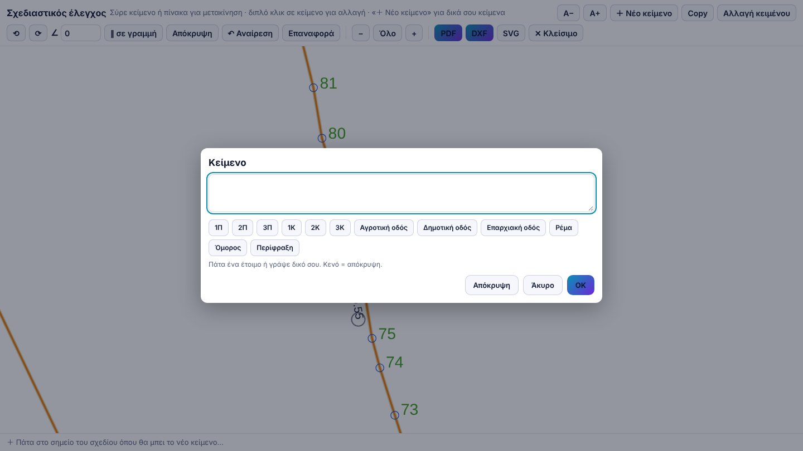
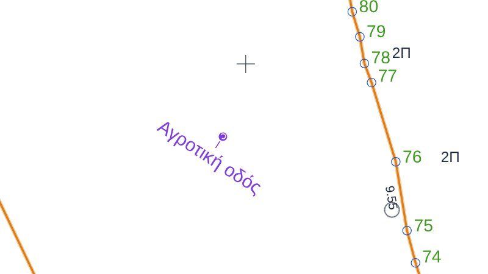
7PDF και DXF για ΚΗΔ
- Στο βήμα 8 διάλεξε κλίμακα και χαρτί (ή άφησε το αυτόματο).
- Αν δεν χωράει σε Α0: στο Χαρτί διάλεξε «Δικό μου μέγεθος» και γράψε πλάτος × ύψος σε mm, ή πάτα ⤢ Βρες μέγεθος που χωράει για το μικρότερο φύλλο που χωράει όλο το σχέδιο. Για ρολό plotter δώσε ως ύψος το πλάτος του ρολού (π.χ. 841 ή 914 mm). Το PDF και το DXF βγαίνουν σε αυτό το μέγεθος.
- PDF για εκτύπωση, DXF τοπογραφικού για CAD και υποβολή.
- Το DXF ελέγχεται αυτόματα με τους κανόνες του Τεύχους Κτηματολογίου. Αν περνά, γράφει «✓ Περνά τον έλεγχο Κτηματολογίου»· αλλιώς λέει τι λείπει.
- Το όνομα αρχείου βγαίνει σωστό για υποβολή, π.χ.
topo_0900252013.dxf. - Οι πίνακες στο DXF είναι επεξεργάσιμοι (TABLE) και ίδιοι με το PDF· ανοίγει σε όλα τα CAD της αγοράς.
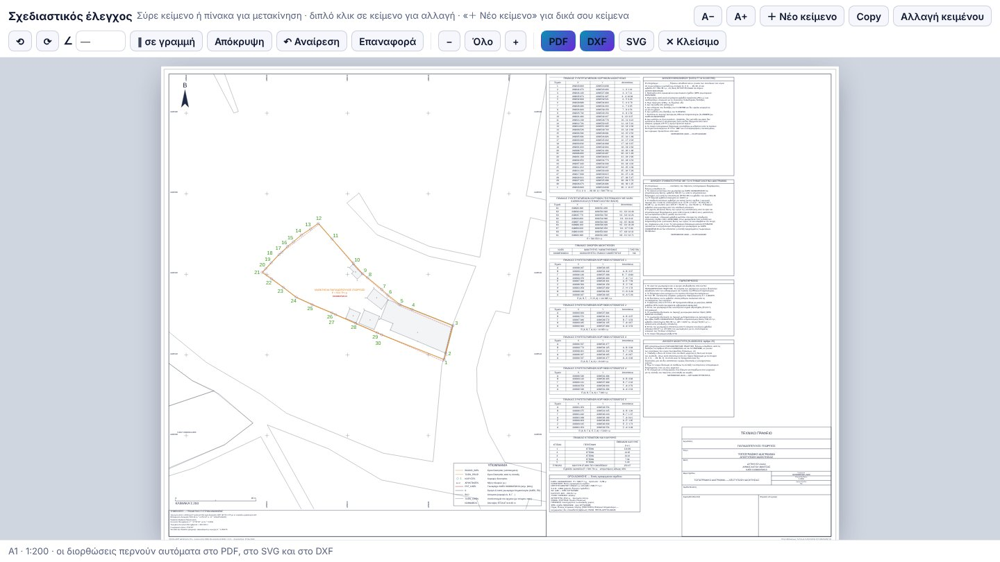
Διάγραμμα Γεωμετρικών Μεταβολών
Όταν η αποτύπωση δεν ταιριάζει με το Κτηματολόγιο ή για πράξη (κατάτμηση, συνένωση, κάθετες). Στο Pro.
8Τι σχεδιάζω στο DXF για ΔΓΜ
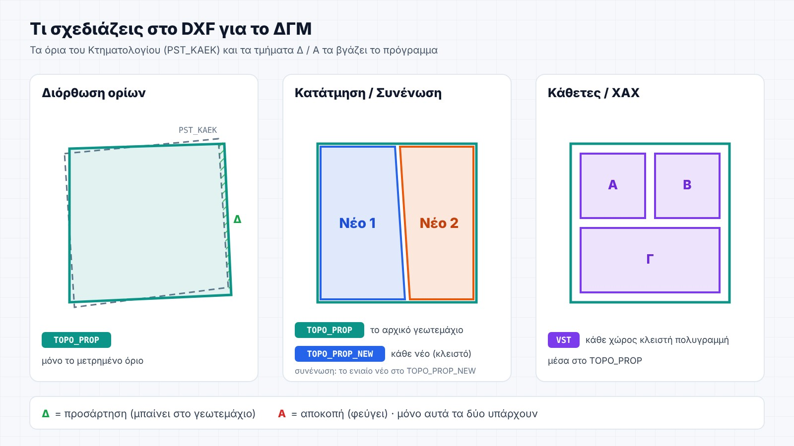
9ΔΓΜ βήμα βήμα
- Ανέβασε το DXF. Καρτέλα 2 Κτηματολόγιο → Εύρεση ΚΑΕΚ.
- Διάλεξε αστική / αγροτική: βλέπεις αν είσαι μέσα στην ανοχή ή χρειάζεται ΔΓΜ.
- Πάτα Διάγραμμα Γεωμετρικών Μεταβολών. Στην καρτέλα 4 ΔΓΜ διάλεξε είδος (διόρθωση, κατάτμηση, συνένωση, κάθετες) και το δικό σου γεωτεμάχιο.
- Δες τα τμήματα Δ (προσάρτηση) και Α (αποκοπή) και διάλεξε ποιες μεταβολές εφαρμόζονται.
- Ακολούθησε τα βήματα 1–6 της καρτέλας ΔΓΜ με «Επόμενο →». Στο 6 Εκτύπωση: ⬇ PDF για εκτύπωση, ⬇ DXF για CAD και DXF Κτηματολογίου. Ο έλεγχος του Τεύχους γίνεται μόνος του.
- Στοιχεία & μηχανικός: ιδιοκτήτης, έργο, διεύθυνση (οδός & αριθμός), θέση, ημερομηνία, ιδιοκτήτες ανά ΚΑΕΚ.
- 6 Εκτύπωση: χαρτί και κλίμακα με ένα πάτημα ή από τις λίστες «Κλίμακα» / «Χαρτί» (πάντα ορατές)· αν δεν χωράει στα Α3–Α0, «Δικό μου μέγεθος» με πλάτος × ύψος ή ⤢ Βρες μέγεθος που χωράει.
- 🖼 Σφραγίδα μηχανικού (εικόνα): μπαίνει στο κουτί «Σφραγίδα Μελετητή».
- Ενότητα Μηχανικός: όνομα, ειδικότητα, Α.Μ. ΤΕΕ, τεχνικό γραφείο — μπαίνουν στην πινακίδα και μένουν για όλες τις εργασίες.
- ✎ Προεπισκόπηση & διόρθωση στην οθόνη (κάτω από «Εκτύπωση»): ίδια εργαλεία με το τοπογραφικό — μετακίνηση πινάκων, υπομνήματος, κειμένων, ＋ Νέο κείμενο, 🖼 Εικόνα για σφραγίδα, γραμμές, βέλη, πολυγραμμές και διαστάσεις. Περνούν σε PDF και DXF.
- Δασικός χάρτης: αναλυτικά (κορυφές, συντεταγμένες, εμβαδά, γραμμοσκίαση) δίνονται μόνο τα τμήματα μέσα στο όριο της ιδιοκτησίας (TOPO_PROP)· τα υπόλοιπα πολύγωνα γύρω σχεδιάζονται μόνο με λεπτό περίγραμμα, για να φαίνονται. Οι μη δασικές κατηγορίες (ΑΑ, αγροτική, οικισμός κ.ά.) δεν χρωματίζονται — μόνο περίγραμμα και κωδικός, όπως στον επίσημο χάρτη.
- Πίνακες που διαβάζονται στο χαρτί: γράμματα πινάκων τουλάχιστον 2,5 mm και σημειώσεων 2,2 mm· οι μεγάλοι πίνακες συντεταγμένων (πάνω από 30 σημεία) σπάνε οριζόντια σε κομμάτια δίπλα-δίπλα (Σημείο | X | Y | Σημείο | X | Y), τα μακριά κείμενα (λίστες κορυφών, ΑΔΑ) συνεχίζουν σε επόμενη γραμμή του κελιού, και οι τελικοί πίνακες (εμβαδά, διόρθωση/μεταβολές, δασικά τμήματα) τυπώνονται λίγο μεγαλύτεροι.
- Δήλωση για το δασικό καθεστώς στη ΔΓΜ: όταν υπάρχουν δασικά τμήματα, μπαίνει αυτόματα στις σημειώσεις του διαγράμματος δήλωση του συντάκτη μηχανικού με το ΦΕΚ κύρωσης του δασικού χάρτη, κάθε τμήμα (αριθμός, εμβαδόν, χαρακτήρας) και, όπου έγινε δεκτή αντίρρηση, τον ΑΔΑ της απόφασης ΕΠΕΑ και τον αρχικό χαρακτηρισμό.
- Μία οθόνη ανά βήμα: στον υπολογιστή η σελίδα δεν κυλάει — αριστερά το βήμα, δεξιά πάντα το σχήμα (ΔΓΜ, κάτοψη ή χάρτης). Στο σχήμα της ΔΓΜ και στην κάτοψη κάνεις ζουμ με τη ροδέλα του ποντικιού εκεί που δείχνει ο κέρσορας, μετακινείς σέρνοντας και με διπλό κλικ (ή «Ολόκληρο») βλέπεις ξανά όλο το σχήμα. Οι ρυθμίσεις που αλλάζουν σπάνια (ελάχιστο τμήμα, ταύτιση, τύπος/όρια DXF, έλεγχος προδιαγραφών) είναι στο αναδιπλούμενο «Ρυθμίσεις & έλεγχος DXF».
- Αντιρρήσεις (ΕΠΕΑ): για κάθε δασικό τμήμα μέσα στην ιδιοκτησία το πρόγραμμα ρωτά «Έγινε αντίρρηση και βγήκε απόφαση ΕΠΕΑ;». Με «Ναι» γράφεις τον ΑΔΑ της απόφασης και τη νέα κατηγορία· το διάγραμμα (τοπογραφικό και ΔΓΜ) παίρνει τη νέα κατηγορία, βγαίνει πίνακας «ΑΠΟΦΑΣΕΩΝ ΕΠΕΑ ΕΠΙ ΑΝΤΙΡΡΗΣΕΩΝ» και ο ΑΔΑ γράφεται στους πίνακες και στη δασική δήλωση. Στη ΔΓΜ το ακίνητο χωρίζεται με τα όρια του δασικού χάρτη σε δασικά τμήματα, αριθμημένα 1, 2, 3… μέσα σε κύκλο (τα «Δ» και «Α» μένουν μόνο για τους κωδικούς της μεταβολής). Κάθε τμήμα γράφει χαρακτήρα και εμβαδόν· οι νέες κορυφές του ορίου παίρνουν γράμματα α, β, γ… με πίνακα συντεταγμένων, και βγαίνει «ΣΥΓΚΕΝΤΡΩΤΙΚΟΣ ΠΙΝΑΚΑΣ ΔΑΣΙΚΩΝ ΤΜΗΜΑΤΩΝ» (κωδικός, χαρακτήρας, εμβαδόν, ισχύς με ΑΔΑ). Ο πίνακας και οι ερωτήσεις είναι στο βήμα «Δασικά» της ΔΓΜ (και στο βήμα «Μηχανικός & δασικά» του τοπογραφικού)· ο δασικός χάρτης έρχεται από το ZIP κύρωσης ή, αν δεν ανέβει ZIP, αυτόματα από το τοπογραφικό. Οι απαντήσεις αποθηκεύονται με την εργασία.
- Τεράστια ΚΑΕΚ (π.χ. παραλιακή λωρίδα, μεγάλο αγροτεμάχιο): το διάγραμμα εστιάζει στη μεταβολή· το γεωτεμάχιο κόβεται γύρω της και γράφεται «ΤΜΗΜΑ ΜΕΓΑΛΥΤΕΡΗΣ ΕΚΤΑΣΗΣ ΚΑΕΚ», ώστε να χωρά έως Α0 σε 1:1000. Οι πίνακές του γράφουν μόνο τις συντεταγμένες του τμήματος που απεικονίζεται (όχι τα σημεία κοπής) και το εμβαδόν ολόκληρου του γεωτεμαχίου. Το δικό σας γεωτεμάχιο δεν κόβεται ποτέ — εμφανίζεται πάντα ακέραιο, όσο μεγάλο κι αν είναι. Το χαρτί μένει πάντα έως Α0 και η κλίμακα έως 1:1000· όλα (σχέδιο, πίνακες, πινακίδα) χωρούν σε ένα φύλλο. Όταν το γεωτεμάχιο είναι πολύ μεγάλο, η στήλη των πινάκων στενεύει και τα γράμματα μικραίνουν λίγο, ώστε να χωρούν όλα στο ίδιο φύλλο.
- Στον σχεδιαστικό έλεγχο του ΔΓΜ μετακινείς και διορθώνεις και τις ετικέτες ΚΑΕΚ / ιδιοκτητών, όπως στο τοπογραφικό.
- Πινακίδα διαγράμματος: Κτηματολογίου, ίδια με το τοπογραφικό ή όποια από τις δικές σου DXF. Ανεβάζεις όσες θέλεις και διαλέγεις κάθε φορά.
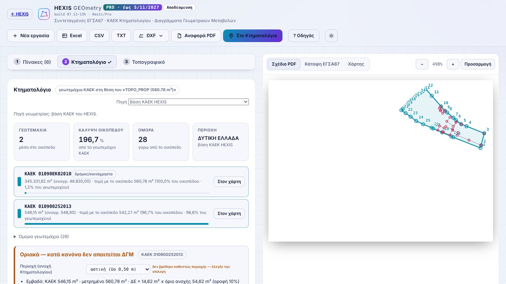
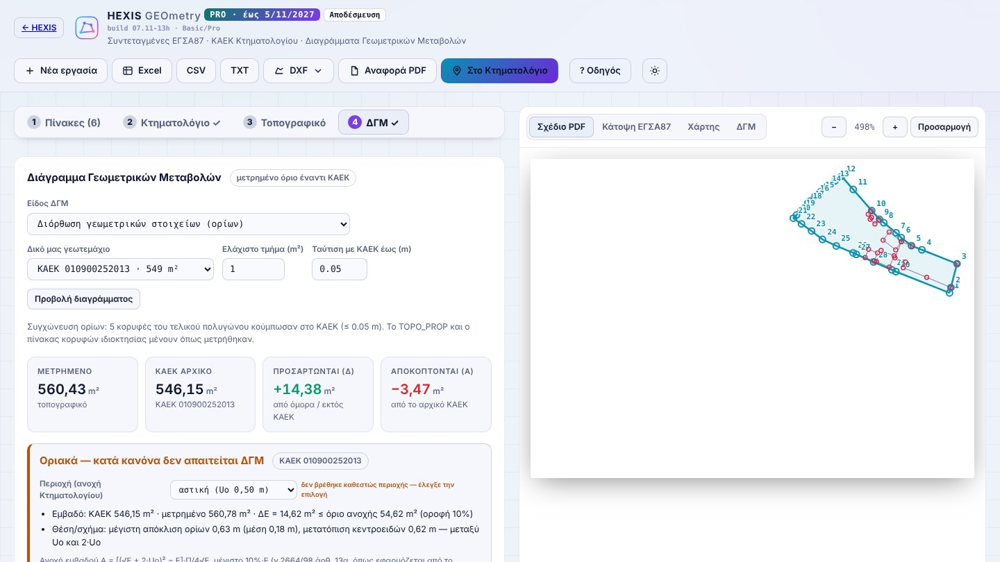
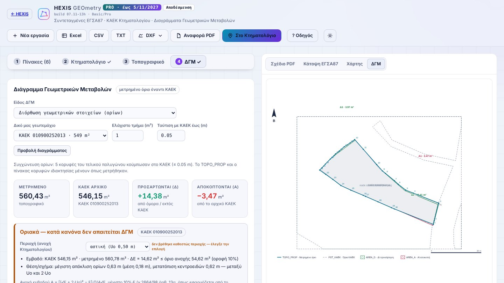
Γενικά
10Εργασίες & αποθήκευση
- Στο Pro κάθε εργασία σώζεται αυτόματα κάθε λίγα δευτερόλεπτα: διορθώσεις, στοιχεία, φωτογραφίες, κείμενα, ΔΓΜ.
- ＋ Νέα εργασία πάνω αριστερά: σε ρωτά πρώτα· η τρέχουσα μένει αποθηκευμένη.
- Στην αρχική σελίδα, Πρόσφατες εργασίες: πάτα Συνέχεια και συνεχίζεις από εκεί που σταμάτησες.
- Αν ξανανεβάσεις το ίδιο αρχείο, σε ρωτά αν θέλεις συνέχεια ή από την αρχή.
- Κάθε εργασία κρατά τα δικά της στοιχεία (ιδιοκτήτης, θέση, εργοδότης, πινακίδα, φωτογραφίες). Νέα εργασία ξεκινά καθαρή· γραφείο και μηχανικός μένουν.
Οι εργασίες μένουν στη συσκευή (έως 20). Η πινακίδα και το λογότυπο μένουν στον λογαριασμό σου, σε όλες τις συσκευές.
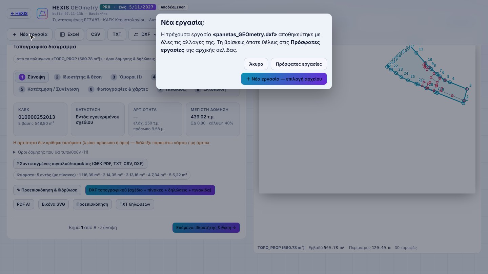
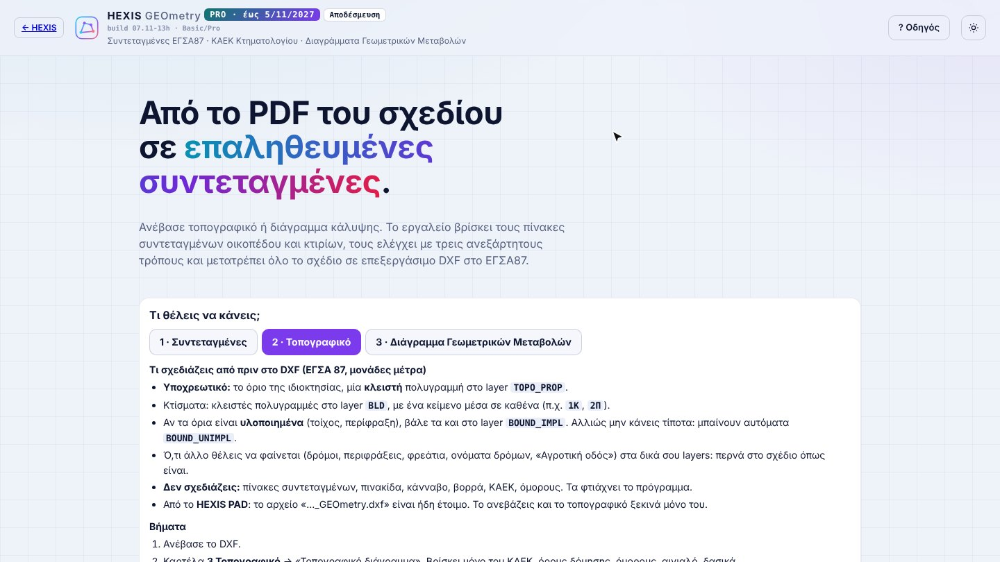
11Συχνές απορίες
Δεν βρίσκει το όριο της ιδιοκτησίας στο DXF.
Το όριο πρέπει να είναι μία κλειστή πολυγραμμή στο layer TOPO_PROP, σε ΕΓΣΑ 87 και σε μέτρα. Ανοιχτές γραμμές του ίδιου layer ενώνονται μόνες τους αν ακουμπούν (≤ 1 cm).
Τα κτίσματα δεν βγαίνουν στους πίνακες.
Βάλε κάθε κτίσμα ως κλειστή πολυγραμμή στο layer BLD και ένα κείμενο μέσα (π.χ. 1Κ). Αν είναι σε άλλο layer, αρκεί το κείμενο να είναι στο BLD.
Υλοποιημένα ή μη υλοποιημένα όρια;
Πάντα BOUND_UNIMPL (μη υλοποιημένα). Γίνονται BOUND_IMPL μόνο αν το διαλέξεις στο βήμα 8 ή αν το DXF σου έχει ήδη τα όρια στο layer BOUND_IMPL.
Αστική ή αγροτική περιοχή;
Αστική (Uo 0,50 m) για εντός σχεδίου και οικισμούς· αγροτική (Uo 2,00 m) για εκτός σχεδίου. Αν η υπηρεσία όρων δόμησης δεν απαντήσει, προτείνεται αστική (αυστηρότερη) με πορτοκαλί σημείωση — έλεγξέ το.
Το DXF λέει ότι δεν περνά τον έλεγχο Κτηματολογίου.
Το μήνυμα λέει τι λείπει (π.χ. ΚΑΕΚ, όνομα αρχείου, layer). Τα περισσότερα τα διορθώνει μόνο του το πρόγραμμα· αν λείπει ο ΚΑΕΚ, κάνε «Εύρεση ΚΑΕΚ» στην καρτέλα 2.
Basic ή Pro;
Basic: συντεταγμένες, έλεγχοι, εξαγωγές. Pro: τοπογραφικό, ΔΓΜ, δηλώσεις, πινακίδα, αυτόματη αποθήκευση εργασιών.